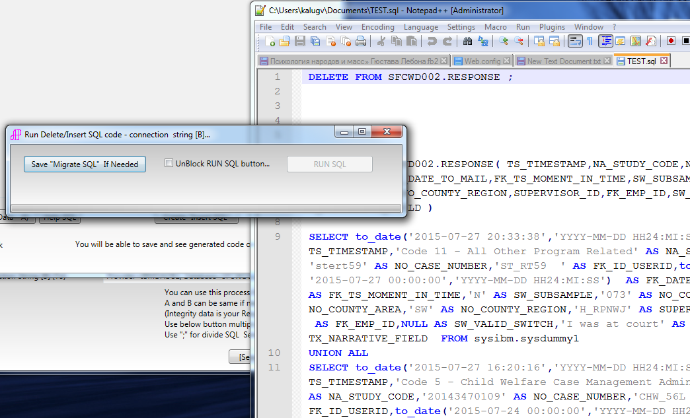

Helper For Migrate Data (for debug purpose)
Application help migrate data from one database to another. Application copy data to dataset, create Insert SQL statement, and help RUN insert statement (or save insert statement in SQL file).
You can find here - TaskScheduler, Dispatcher.Invoke, Action, OleDb, DataSet, DB2 SQL, etc...
Just RUN application, insert OleDb connection string "From" and "TEST" it, insert second OleDb connection string "To" and "TEST" it also. If all buttons are GREEN you will be able Select button "[Select] SQL Script For A".
In new window insert simple SQL script like "Select * From" and select button "Help Sql" it build detail SQL script. You can modify it, add scramble code, etc... and "Run[Bring Data]" ... Next you will be able "Create "Insert SQL""
Save "Migrate SQL" into SQL file, analize, edit and Run with external tool(s) or you can RUN SQL using this tool.

Plese review web.config file .
<add key="excludeOf" value="SSSSSSSSSS;50022" />
<!--exclude of SSSSSSSSSS and/or port 50022 from "B" INSERT - NO SPACE between words ;" -->
<add key="excludeOfword" value="INSERT;DELETE;DROP;UPDATE;CREATE;ALTER;JOIN" />
<!--exclude of From Select Screen - Use only simple SELECT () -->
These keys help privent exedently run Inser, Delete, ... for example on PROD (first connection string) ...
This application was tested on DB2 database. Mostly problem was with datetime ... it was fixed using code which convert datatime string TO_DATE('...','...') - see code...
For performance purpose application create SQL code -> for create virtual table SELECT ...UNION ... SELECT ... (100 rows see config file - you can change it) ... and uses this table for insert ... DO NOT INSERT row by row it will be performance issue ...
You can copy multiply tables at ones. Use multiply SELECT code divided by ";" ... First SQL should be primary table, next child, next child of child, etc... Inside "created SQL code" you find DELETE SQL code in reverse sequences. Insert will be use primery sequences which you used before... Good luck...
<Window
xmlns="http://schemas.microsoft.com/winfx/2006/xaml/presentation"
xmlns:x="http://schemas.microsoft.com/winfx/2006/xaml"
xmlns:local="clr-namespace:WpfHelperCopyData" x:Name="Main" x:Class="WpfHelperCopyData.MainHelperWindow"
Title="Select Data From [A] -> Insert to [B]" Height="220" Width="1078.415" MinHeight="250" MaxHeight="250" MinWidth="1000" Closing="Window_Closing" Icon="AP.ico">
<Grid Margin="2,0,2,-2">
<Grid.Background>
<LinearGradientBrush EndPoint="0.5,1" StartPoint="0.5,0">
<GradientStop Color="#FFC3C3C3" Offset="0.009"/>
<GradientStop Color="White" Offset="0.982"/>
</LinearGradientBrush>
</Grid.Background>
<TextBox x:Name="txtConnA" Height="23" Margin="203,36,60,0" TextWrapping="Wrap" Text="Provider=IBMDADB2; Database=**********; Hostname=**********; Protocol=TCPIP; Port=**********; Uid=**********; Pwd=**********;" VerticalAlignment="Top" ToolTip="You can copy form any DataBase ...." TextChanged="txtConnA_TextChanged" >
<TextBox.Background>
<LinearGradientBrush EndPoint="0.5,1" StartPoint="0.5,0">
<GradientStop Color="#FFCBCACA" Offset="0"/>
<GradientStop Color="#FFF9F8F8" Offset="1"/>
</LinearGradientBrush>
</TextBox.Background>
</TextBox>
<TextBox x:Name="txtConnB" Height="23" Margin="203,57,60,0" TextWrapping="Wrap" Text="Provider=IBMDADB2; Database=**********; Hostname=**********; Protocol=TCPIP; Port=**********; Uid=**********; Pwd=**********;" VerticalAlignment="Top" ToolTip="You will be able insert data to the DEV/Test only..." TextChanged="txtConnB_TextChanged" >
<TextBox.Background>
<LinearGradientBrush EndPoint="0.5,1" StartPoint="0.5,0">
<GradientStop Color="#FFC9C9C9" Offset="0"/>
<GradientStop Color="White" Offset="1"/>
</LinearGradientBrush>
</TextBox.Background>
</TextBox>
<TextBlock x:Name="connA" HorizontalAlignment="Left" Margin="10,39,0,0" TextWrapping="Wrap" Text="Connection String [A] (From)" VerticalAlignment="Top" Width="188" IsEnabled="False"/>
<TextBlock x:Name="connB" HorizontalAlignment="Left" Margin="10,60,0,0" TextWrapping="Wrap" Text="Connection String [B] (To)" VerticalAlignment="Top" Width="188" IsEnabled="False"/>
<Label Content="Please Use OLE DB Connection String" HorizontalAlignment="Center" Margin="406,0,383,0" VerticalAlignment="Top" Width="229"/>
<TextBlock Margin="0,85,206,0" TextWrapping="Wrap" VerticalAlignment="Top" Height="90" RenderTransformOrigin="0.494,1.042" HorizontalAlignment="Right" Width="478"><Run Text="You can use this process for copy/scramble data. "/><LineBreak/><Run Text="A and B can be same if needed (Application save data in DataSet)."/><LineBreak/><Run Text="(Integrity data is your Responsibility)"/><LineBreak/><Run Text="Use below button multiply times for work with multiplies tables or SET of tables."/><LineBreak/><Run Text="Use ";" for divide SQL Select statements... "/></TextBlock>
<Button x:Name="btnTestA" Content="Test A" Margin="0,33,10,0" VerticalAlignment="Top" HorizontalAlignment="Right" Width="45" IsCancel="True" Click="btnTestA_Click"/>
<Button x:Name="btnTestB" Content="Test B" Margin="0,59,10,0" VerticalAlignment="Top" HorizontalAlignment="Right" Width="45" IsCancel="True" Click="btnTestB_Click"/>
<Button x:Name="btnBringFromA" Content="[Select] SQL Script For A" Margin="0,180,428,0" ToolTip="Will Open additional window ... Only SELECT ..." HorizontalAlignment="Right" Width="159" Height="22" VerticalAlignment="Top" Click="btnBringFromA_Click"/>
</Grid>
</Window>
using System; using System.Collections.Generic; using System.Windows; using System.Windows.Controls; using System.Windows.Media; namespace WpfHelperCopyData { /// <summary> /// Interaction logic for MainHelperWindow.xaml /// </summary> public partial class MainHelperWindow : Window { private String strExcludeOf = System.Configuration.ConfigurationManager.AppSettings["excludeOf"].ToString().ToUpper(); private Boolean blnTestedA = false; private Boolean blnTestedB = false; private List<HelperSQLcode> listSQLcode = new List<HelperSQLcode>(); public MainHelperWindow() { InitializeComponent(); } private void btnTestA_Click(object sender, RoutedEventArgs e) { try { OleDbDataBase db = new OleDbDataBase(); if (db.blnTestConnection(txtConnA.Text) == false) { MessageBox.Show("Wrong Connection String [A] ..."); return; } blnTestedA = true; btnTestA.Background = new SolidColorBrush(Colors.Green); } catch (Exception ex) { MessageBox.Show(ex.Message); return; } } private void btnTestB_Click(object sender, RoutedEventArgs e) { try { OleDbDataBase db = new OleDbDataBase(); if (db.blnTestConnection(txtConnB.Text) == false) { MessageBox.Show("Wrong Connection String [B] ..."); return; } blnTestedB = true; btnTestB.Background = new SolidColorBrush(Colors.Green); } catch (Exception ex) { MessageBox.Show(ex.Message); return; } } private void btnBringFromA_Click(object sender, RoutedEventArgs e) { if (blnTestedA & blnTestedB) { var newSQLCode = new HelperSQLcode(); newSQLCode.Show(); newSQLCode.strConnectionStringFrom = txtConnA.Text; newSQLCode.strConnectionStringTo = txtConnB.Text; listSQLcode.Add(newSQLCode); } else { MessageBox.Show("Please Test Connection String ..."); } } private void txtConnA_TextChanged(object sender, TextChangedEventArgs e) { blnTestedA = false; try { btnTestA.Background = new SolidColorBrush(Colors.Silver); foreach (HelperSQLcode lst in listSQLcode) { lst.Close(); } } catch { } } private void txtConnB_TextChanged(object sender, TextChangedEventArgs e) { blnTestedB = false; try { btnTestB.Background = new SolidColorBrush(Colors.Silver); foreach (HelperSQLcode lst in listSQLcode) { lst.Close(); } foreach (string str in strExcludeOf.Split(';')) { if (txtConnB.Text.ToUpper().IndexOf(str) >= 0) { MessageBox.Show("Server Name OR Port in exclusion list - see app.config!"); txtConnB.Text = txtConnB.Text.Replace(str, "*********"); return; } } } catch { } } private void Window_Closing(object sender, System.ComponentModel.CancelEventArgs e) { foreach (HelperSQLcode lst in listSQLcode ) { lst.Close(); } } } }
<Window xmlns="http://schemas.microsoft.com/winfx/2006/xaml/presentation" xmlns:x="http://schemas.microsoft.com/winfx/2006/xaml" xmlns:local="clr-namespace:WpfHelperCopyData" x:Name="Main" x:Class="WpfHelperCopyData.MainHelperWindow" Title="Select Data From [A] -> Insert to [B]" Height="220" Width="1078.415" MinHeight="250" MaxHeight="250" MinWidth="1000" Closing="Window_Closing" Icon="AP.ico"> <Grid Margin="2,0,2,-2"> <Grid.Background> <LinearGradientBrush EndPoint="0.5,1" StartPoint="0.5,0"> <GradientStop Color="#FFC3C3C3" Offset="0.009"/> <GradientStop Color="White" Offset="0.982"/> </LinearGradientBrush> </Grid.Background> <TextBox x:Name="txtConnA" Height="23" Margin="203,36,60,0" TextWrapping="Wrap" Text="Provider=IBMDADB2; Database=**********; Hostname=**********; Protocol=TCPIP; Port=**********; Uid=**********; Pwd=**********;" VerticalAlignment="Top" ToolTip="You can copy form any DataBase ...." TextChanged="txtConnA_TextChanged" > <TextBox.Background> <LinearGradientBrush EndPoint="0.5,1" StartPoint="0.5,0"> <GradientStop Color="#FFCBCACA" Offset="0"/> <GradientStop Color="#FFF9F8F8" Offset="1"/> </LinearGradientBrush> </TextBox.Background> </TextBox> <TextBox x:Name="txtConnB" Height="23" Margin="203,57,60,0" TextWrapping="Wrap" Text="Provider=IBMDADB2; Database=**********; Hostname=**********; Protocol=TCPIP; Port=**********; Uid=**********; Pwd=**********;" VerticalAlignment="Top" ToolTip="You will be able insert data to the DEV/Test only..." TextChanged="txtConnB_TextChanged" > <TextBox.Background> <LinearGradientBrush EndPoint="0.5,1" StartPoint="0.5,0"> <GradientStop Color="#FFC9C9C9" Offset="0"/> <GradientStop Color="White" Offset="1"/> </LinearGradientBrush> </TextBox.Background> </TextBox> <TextBlock x:Name="connA" HorizontalAlignment="Left" Margin="10,39,0,0" TextWrapping="Wrap" Text="Connection String [A] (From)" VerticalAlignment="Top" Width="188" IsEnabled="False"/> <TextBlock x:Name="connB" HorizontalAlignment="Left" Margin="10,60,0,0" TextWrapping="Wrap" Text="Connection String [B] (To)" VerticalAlignment="Top" Width="188" IsEnabled="False"/> <Label Content="Please Use OLE DB Connection String" HorizontalAlignment="Center" Margin="406,0,383,0" VerticalAlignment="Top" Width="229"/> <TextBlock Margin="0,85,206,0" TextWrapping="Wrap" VerticalAlignment="Top" Height="90" RenderTransformOrigin="0.494,1.042" HorizontalAlignment="Right" Width="478"><Run Text="You can use this process for copy/scramble data. "/><LineBreak/><Run Text="A and B can be same if needed (Application save data in DataSet)."/><LineBreak/><Run Text="(Integrity data is your Responsibility)"/><LineBreak/><Run Text="Use below button multiply times for work with multiplies tables or SET of tables."/><LineBreak/><Run Text="Use ";" for divide SQL Select statements... "/></TextBlock> <Button x:Name="btnTestA" Content="Test A" Margin="0,33,10,0" VerticalAlignment="Top" HorizontalAlignment="Right" Width="45" IsCancel="True" Click="btnTestA_Click"/> <Button x:Name="btnTestB" Content="Test B" Margin="0,59,10,0" VerticalAlignment="Top" HorizontalAlignment="Right" Width="45" IsCancel="True" Click="btnTestB_Click"/> <Button x:Name="btnBringFromA" Content="[Select] SQL Script For A" Margin="0,180,428,0" ToolTip="Will Open additional window ... Only SELECT ..." HorizontalAlignment="Right" Width="159" Height="22" VerticalAlignment="Top" Click="btnBringFromA_Click"/> </Grid> </Window>